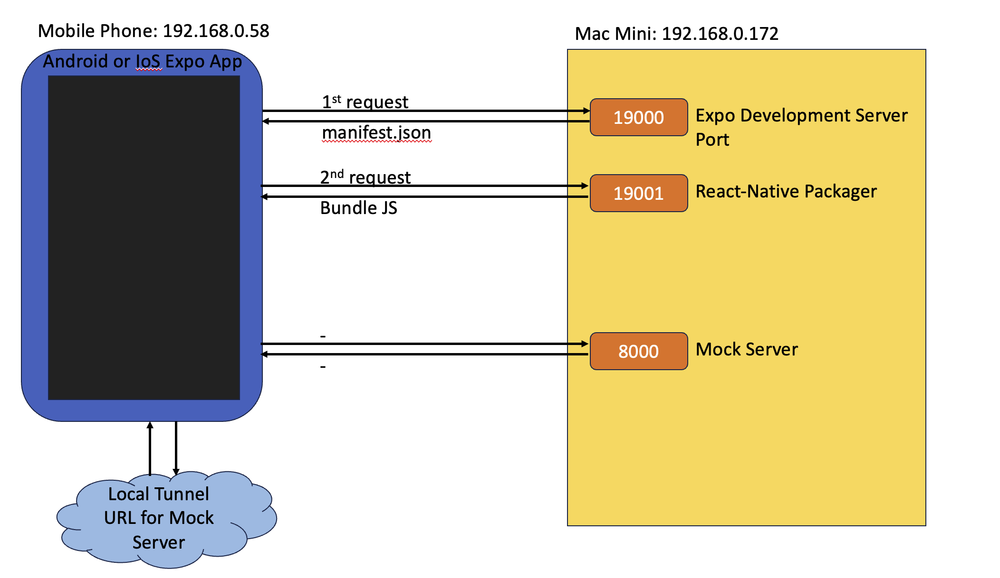

Proof Of Concept and Research Projects
June 9, 2023
Introduction #
Here are the main categories to be developed as Proof of Concept or Research (Hypotheses/Experiments/Results)
- Java/Go/Python Projects
- Infrastructure Projects
- Cloud solution Projects
Finite State Machine with Xstate and Typescript, Java, Python #
Research on various techniques on how to develop application suing Finite State Machine.
Finite State Machine #
State machine is a concept used for designing complex system
- State Machine parts are: States, Events, Initial State, Transitions, Final State.
- State is a representation of a system in specific point of time
- Events are actions that causes transitions between states
- Transition is a change between states
An example of water state machine
 [Code sample implemented in typescript and xstate] (https://github.com/henrynguyenattheitservice/watermachine)
Water machine states are specified as follows:
[Code sample implemented in typescript and xstate] (https://github.com/henrynguyenattheitservice/watermachine)
Water machine states are specified as follows:
const waterMachine = createMachine({
id: 'water',
initial: 'liquid',
states: {
ice: {},
liquid: {},
gas: {},
plasma: {},
}
});
Note that there are five different types of states: Initial, Final, Child, Terminal or Last State (double border),?. Events are HEAT and FREEZE Water state machine is full specified as follows
import {createMachine} from "xstate";
import {useMachine} from "@xstate/react";
const waterMachine = createMachine({
id: 'water',
initial: 'liquid',
states: {
ice: {
on : {
HEAT: {
target: "liquid"
}
}
},
liquid: {
on: {
HEAT: {
target: "gas"
},
FREEZE: {
target: "ice"
}
}
},
gas: {
on: {
HEAT: {
target: "plasma"
},
FREEZE: {
target: "liquid"
}
}
},
plasma: {
on: {
FREEZE: {
target: "gas"
}
}
}
}
});
- Application can only be in One State of a time. Transitions happens only when Events are allowed. Everything is transparent and machine will never go out of defined bounds and decides which state the application is in.
- Action is function that can be called on an event or transition - Side effect that we can run on the State Machine
- Actions on Events - calling actions on events by function definition or function name with definition below machine
- Each state can handle special type of actions: Entry Action executing up on entering a state or Exit Action executing upon exiting a state
- Context is a place for storing data - Data in context can be initial when the machine is first created but can also be assigned by an action
- Assign function gets current context and event as parameter
- Guards is conditional actions and transitions - Guard is a function checking if action or transition is allowed to happen. Guards allow to call actions and make transitions based on some condition. Guards can be passed in special condition property.
- Transition kinds are Internal, External, Eventless, and Forbidden (TBC)
- Services are invoked by using special Invoke property. Handling result on Done for resolved Promise and onError for rejected Promise.
- Machine can interpret states in parallel using type = parallel and onDone = trigger the state in parallel.
Javascript and Typescript #
- Hypothesis: Develop web application and FSM using typescript - Xstate brings State Machines to Javascript/Typescript world.
- Hypothesis Develop FSM using Typescript/Javascript
- Hypothesis Develop Web App using Typescript and FSM Typescript
Python #
- Hypothesis: Develop web application and FSM using Python
- Hypothesis Develop FSM using Python
- Hypothesis Develop App using Python and FSM Python
Java #
- Hypothesis: Develop web application and FSM using Java
- Hypothesis Develop FSM using Java
- Hypothesis Develop App using Java and FSM Java
ChatGPT Voice Chat Bot With NextJS & OpenAI #
ChatGPT Integration #
Use Protobuf and gPRC to mock up CoAP/LwM2M/IPSO solution #
Temporal workflow and How to break down Components as part of the DevEnv #
Temporal workflow and Saga Finite State Machine Findings #
Full Stack with React #
React and React-Native with IoS and Android #
 To figure out a solution I tried to understand how Expo runs the React Native code base inside the Expo Application on our mobile. I went through Expo’s documentation How Expo works? and mapped it to the output I got for my own application
After executing yarn start I get a QR code to scan followed by
‘Your app is now running at URL: exp:// 192.168.0.172:19000’
On scanning the QR code the Expo app on my mobile makes a request to 192.168.0.172:19000. This returns a JSON which includes metadata about our application and the URL where React Native Packager Server is running. This is provided against the key bundleUrl
By default React Native packager runs a server on localhost:8001
Based on the value of bundleUrl Expo had launched the React Native packager server on 192.168.0.172:19001
Next the Expo app on mobile fetches the app’s Javascript from bundleUrl served on 192.168.0.172:19001
I get a Network error because while my application is running on my mobile it makes a request to 127.0.0.1:8000. Presumably it either refers to the loopback address on Android where there isn’t any server running on port 8000 or the address is unidentified and hence a Network error
In order to access the mock server it has to be available either on my development machine’s IP address (where it will be accessible because my mobile and laptop are on the same network as required by Expo) or on a universally accessible URL over the internet By using ngrok or localtunnel
By using either of these modules we can expose a server running on localhost on the web.
Next we can use the corresponding URL to access the mock-server from our application running inside Expo
I went ahead with localtunnel
Installing localtunnel globally on my dev machine
yarn global add localtunnel
I used json-server to setup and run a mock server. The following command sets up the mock server on localhost and port 8000
json-server –port 8000 ./db.json –watch
Next to expose the mock server to the web use localtunnel
lt –port 8000 –subdomain application-mock-server
The above command will return a URL accessible across Internet of the form https://application-mock-server.localtunnel.me. This URL can be plugged inside the React Native code base and will be accessible from the application running inside Expo on the mobile.